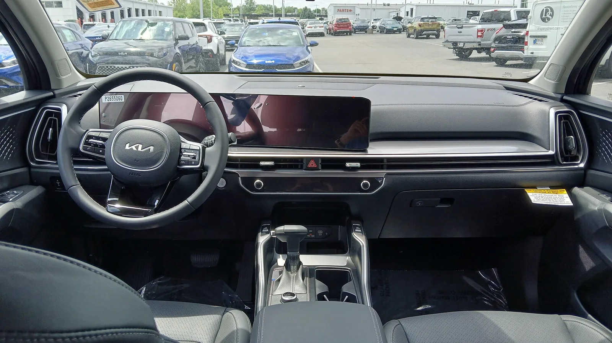
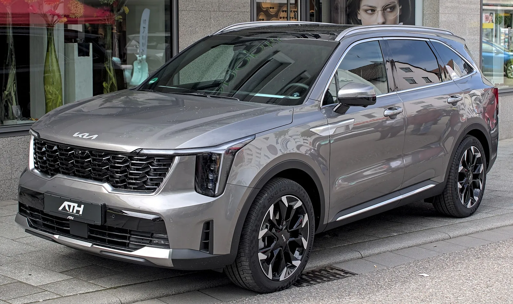
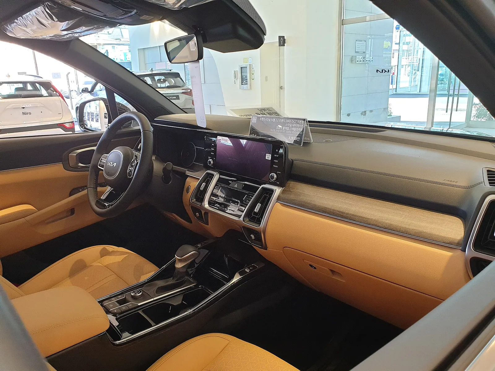
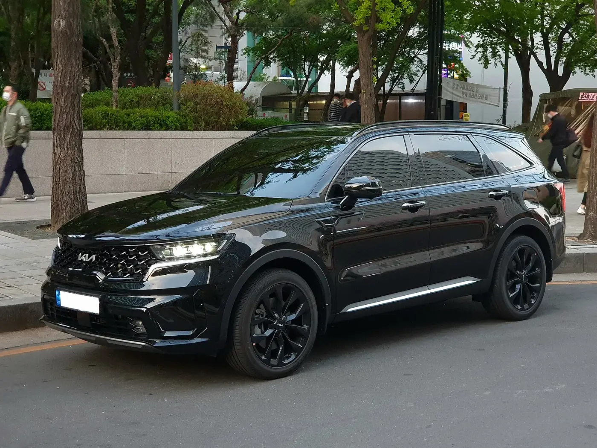
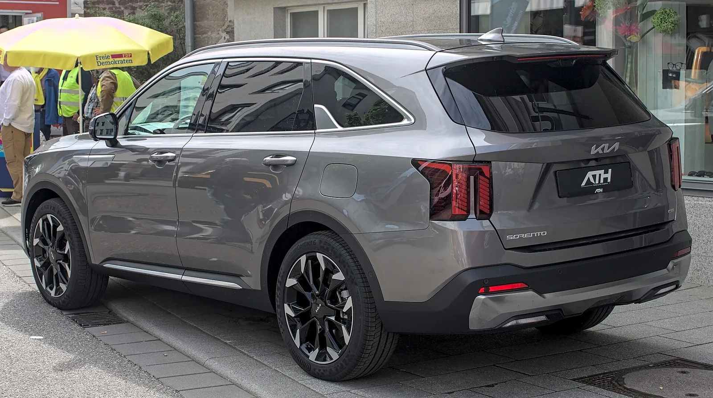
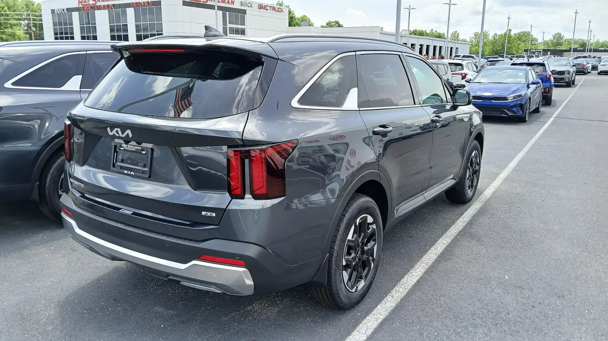
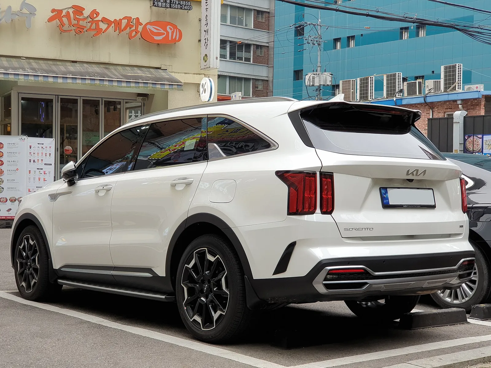
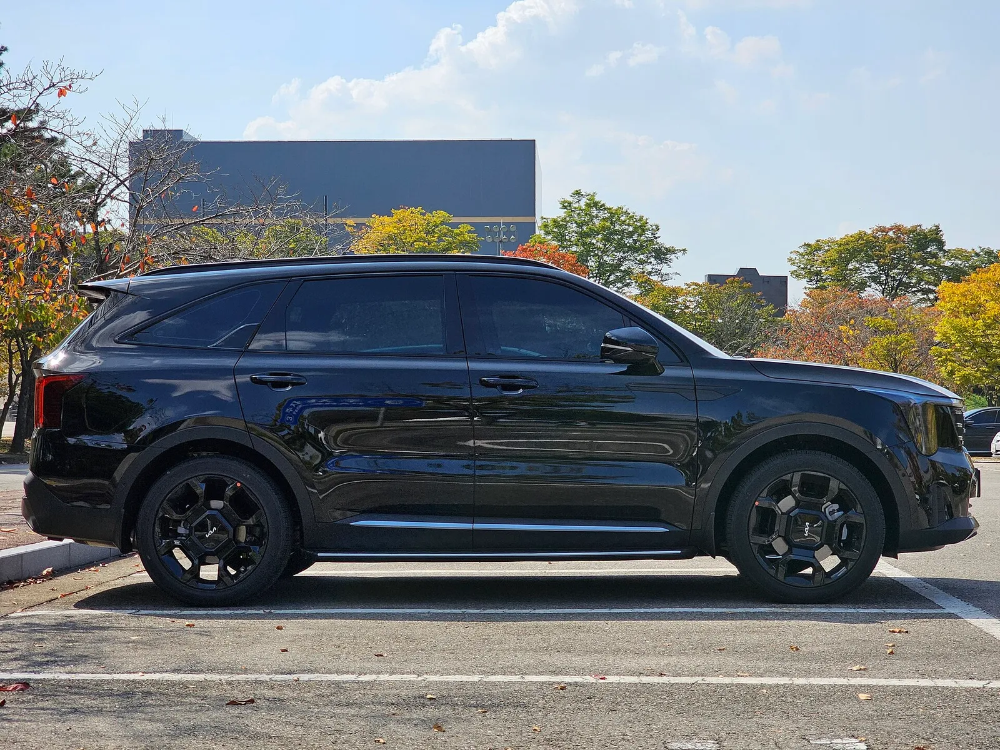
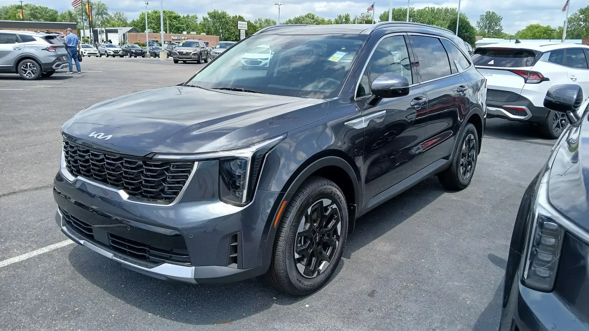

▲ 트림이 올라갈수록 앞모습의 램프·휠·그릴 디테일이 달라진다. 해외 촬영 사진이라 국내 사양과 다를 수 있다 ⓒ Alexander Migl, Wikimedia Commons (CC BY-SA 4.0)
"노블레스로 올리면 336만 원 더 든다는데, 그 돈이 다 어디로 가는 걸까." 쏘렌토 하이브리드를 계약하려는 운전자가 가장 먼저 부딪히는 질문이다. 카탈로그에는 사양이 빼곡히 적혀 있지만, 각 사양이 얼마짜리인지는 적혀 있지 않다.
그래서 기아 공식 가격표(2026년 10월판)의 트림 가격과 '선택 품목 가격표'를 나란히 놓고 직접 계산했다. 가격표가 옵션 값을 따로 밝힌 항목은 그 값으로 고정하고, 나머지는 "신규로 들어온 기본 항목이 몇 개인가"로 환산했다. 계산 방식과 가정은 본문에 모두 적었고, 확인하지 못한 것은 확인하지 못했다고 표시했다.
1. 계산의 출발점 — 가격표 기준일과 세금 조건부터 확인
트림 가격 비교에서 가장 먼저 흔들리는 것이 기준이다. 같은 차도 개별소비세(개소세) 인하 여부, 친환경차 감면 적용 여부에 따라 수십~백만 원이 달라진다.
▲ 어두운 회색 쏘렌토. 부분변경 전후 여부는 사진으로 확정하지 않았으며, 해외에서 촬영된 사진이라 국내 사양과 다를 수 있다 ⓒ Alexander Migl, Wikimedia Commons (CC BY-SA 4.0)
| 항목 | 내용 | 확인 근거 |
|---|---|---|
| 가격표 | 기아 쏘렌토 공식 가격표 2026년 10월판(파일명 쏘렌토_202610, 2026년 9월 30일 생성) | 기아 공식 사이트 가격표 PDF |
| 적용 시점 | 기아 가격 페이지에 2026년 10월 1일 적용으로 표기 | 기아 공식 가격 페이지 |
| 승용차 개소세 | 인하(5%→3.5%)는 2026년 6월 30일 종료, 7월부터 정상세율 | 개소세 정리 기사 |
| 하이브리드 가격 | 가격표에 "친환경차 세제혜택 후"로 표기, 혜택 전보다 100만 원 낮음(프레스티지 4,063→3,963) | 가격표 직접 대조 |
| 가솔린 가격 | 가솔린 면에는 세율·세제 문구가 없다(PDF 직접 확인, 하이브리드 면에만 "친환경차 세제혜택 후" 표기). 인하 종료 이후의 가격표라 인하분은 반영되지 않은 것으로 판단 | 가격표 직접 대조 + 반영 여부는 추정 |
📍 가격표에 세금이 어떻게 들어있는지
하이브리드 4개 트림은 모두 "세제혜택 전 가격 - 100만 원"이 판매가로 적혀 있다. 이 100만 원은 개소세 감면 한도 하나가 아니라 세 가지 감면의 합산 효과로 보는 것이 맞다. 하이브리드의 개소세 감면 한도는 70만 원(한국세정신문 보도)이고, 여기에 교육세(개소세의 30%, 최대 21만 원), 이 둘에 붙는 부가세 약 9만 원이 함께 줄어 합계가 약 100만 원이 된다(70+21=91만 원, 부가세 10%를 얹으면 약 100만 원, 카프리즘 계산). 일부 보도가 "개소세 100만 원"과 "70만 원"을 섞어 쓰는 것은 이 합산 효과와 개소세 한도를 구분하지 않은 데서 오는 표기 차이로 보인다(추정). 감면 한도 70만 원, 합산 효과 약 100만 원이라는 두 숫자를 구분해서 읽으면 가격표의 100만 원 차이가 설명된다. 이 감면의 시한이 올해 말이라는 점은 위 개소세 기사에 정리돼 있고, 정부의 2026 세제개편안(8월 발표)도 하이브리드 개소세 감면을 연장하지 않고 올해 말 종료하는 안을 담았다. 다만 국회 확정 전이므로, 2027년 출고분 가격은 지금 가격표 그대로라고 가정할 수 없다.
2. 트림 사다리 — 한 칸 올릴 때마다 얼마를 더 내나
가격표의 판매가를 그대로 옮기면 다음과 같다. 5인승 2WD, 단위는 만 원이다.
| 트림 | 2.5 가솔린 터보 | 상승분 | 1.6 하이브리드(혜택 후) | 상승분 | 하이브리드 프리미엄 |
|---|---|---|---|---|---|
| 프레스티지 | 3,641 | - | 3,963 | - | +322 |
| 노블레스 | 3,966 | +325 | 4,299 | +336 | +333 |
| 시그니처 | 4,247 | +281 | 4,576 | +277 | +329 |
| X-Line | 4,341 | +94 | 4,670 | +94 | +329 |
| 블랙 에디션 | 4,441 | +100(X-Line 대비) | 4,795 | +125(X-Line 대비) | +354 |
하이브리드 프리미엄은 트림이 올라가도 322만~354만 원으로 거의 일정하다. 즉 "하이브리드 vs 가솔린"은 트림과 상관없이 약 330만 원짜리 선택이고, 트림 선택은 그와 별개로 336만 → 277만 → 94만 원의 세 계단을 고르는 문제다. 세 계단 가운데 어느 곳에 돈을 쓸 가치가 있는지가 이 기사의 핵심이다.
✅ 블랙 에디션은 왜 제외했나
블랙 에디션은 시그니처 기반이지만 하이브리드 기준 컨티넨탈 타이어와 고급형 ISG가 빠지는 등 구성이 달라, 같은 사다리에 올려놓고 항목을 세기에 적절치 않다. 아래 계산은 프레스티지·노블레스·시그니처·X-Line 4개 트림만 다룬다.
3. 프레스티지 → 노블레스 +336만 원: 무엇이 들어오나
가격표의 "프레스티지 기본 품목 외" 목록을 항목 단위로 나눠 세면 노블레스에서 새로 기본이 되는 것은 19개다.

▲ 미국에서 촬영된 쏘렌토 실내. 국내 노블레스의 파노라믹 커브드 디스플레이와 같은 구성인지는 확인하지 못했다 ⓒ Deathpallie325, Wikimedia Commons (CC BY-SA 4.0)
| 분류 | 신규 기본 항목 | 개수 |
|---|---|---|
| 주차·안전 | 원격 스마트 주차 보조, 후방 주차 충돌방지 보조, 측방 주차 거리 경고 | 3 |
| 외장 | 터치타입 아웃사이드 도어핸들, 새틴 크롬 스키드 플레이트, 루프랙 | 3 |
| 내장 | 12.3인치 클러스터와 파노라믹 커브드 디스플레이, 프리미엄 스티어링 휠, 인서트 필름·나파 엠보 내장재, 메탈 페달·도어스커프 | 4 |
| 시트 | 가죽시트 | 1 |
| 편의 | 2열 측면 수동 선커튼, 2열 세이프티 파워윈도우, 서라운드 뷰 모니터(리모트 360도 뷰), 후측방 모니터, 기아 디지털 키 2, 운전석 메모리 시스템, 운전석 이지 억세스, 후진연동 자동하향 아웃사이드미러 | 8 |
| 합계 | 19 |
이 가운데 공식 가격표가 따로 값을 매긴 것은 12.3인치 클러스터 하나(프레스티지 선택 시 59만 원)뿐이다. 나머지 18개는 단품 가격이 공개돼 있지 않다. 336만 원에서 59만 원을 빼면 277만 원이 18개 항목의 몫이고, 단순 평균으로 항목 하나에 약 15.4만 원을 낸 셈이다.

▲ 쏘렌토 운전석 주변. 계기판이 4.2인치인지 12.3인치인지, 어느 트림인지는 사진으로 확정하지 않았다 ⓒ Damian B Oh, Wikimedia Commons (CC BY-SA 4.0)
📍 옵션표에 없는 항목은 단품으로 살 수 없다
가격표의 선택 품목표에서 프레스티지가 고를 수 있는 것은 4WD, 6·7인승, 스타일 패키지, 12.3인치 클러스터, 드라이브 와이즈, HUD·빌트인 캠 2, 파노라마 선루프 등이다. 가죽시트·서라운드 뷰·디지털 키 2는 여기에 없다. 이 사양이 필요하면 트림을 올리는 것이 유일한 경로라는 뜻이다. 다만 옵션표에 없다는 것과 판매 중 선택이 가능한지는 다른 문제이므로, 계약 전 영업점 확인이 필요하다.
4. 노블레스 → 시그니처 +277만 원: 스타일 패키지가 기준점
시그니처에서 새로 기본이 되는 항목은 11개다. 프로젝션 LED 헤드램프(시퀀셜 턴시그널), 앞뒤 LED 턴시그널·리어 콤비램프, 후진 가이드 램프, 2열 이중접합 차음 글라스, 니트 내장재 A/B 필러 트림, 앰비언트 라이트, 전동 틸트·텔레스코픽 스티어링 휠, 2열 시트백 100W C타입 단자, 220V 인버터, 그리고 하이브리드는 19인치 타이어·휠이다.

▲ 시그니처부터 프로젝션 LED 헤드램프가 들어간다. 사진은 해외 촬영 차량이다 ⓒ Alexander-93, Wikimedia Commons (CC BY-SA 4.0)
이 구간의 공식 기준점은 스타일 패키지다. 선택 품목표에서 스타일은 프레스티지 124만 원, 노블레스 114만 원이고 시그니처부터는 '기본'이다. 노블레스에 스타일을 달면 4,299 + 114 = 4,413만 원이므로, 시그니처 4,576만 원과의 차이는 163만 원으로 줄어든다. 스타일 패키지의 세부 구성은 가격표 22쪽 '패키지 옵션' 표에 적혀 있고, 아래에서 항목별로 정리했다.
| 구간 | 상승분 | 신규 기본 항목 | 공식 옵션가로 확인되는 금액 | 확인 비율 | 100만 원당 항목 수 | 항목당 평균(만 원) |
|---|---|---|---|---|---|---|
| 프레스티지→노블레스 | 336 | 19 | 59(12.3인치 클러스터) | 17.6% | 5.65 | 17.7 |
| 노블레스→시그니처 | 277 | 11 | 114(스타일 패키지) | 41.2% | 3.97 | 25.2 |
| 시그니처→X-Line | 94 | 2(디자인) | 0 | 0% | 2.13 | 47.0 |
수식은 단순하다. 100만 원당 항목 수 = 신규 기본 항목 수 ÷ 상승분(만 원) × 100, 항목당 평균 = 상승분 ÷ 신규 기본 항목 수다. 항목 수는 카프리즘이 가격표 문구를 쉼표 단위로 나눠 센 값이어서 서라운드 뷰와 루프랙이 똑같이 1개로 잡힌다. 항목의 '크기'를 반영하지 못한다는 한계가 있으므로 방향을 보는 용도로만 써야 한다. 또 시그니처 구간은 스타일 패키지의 구성이 위 11개와 겹쳐서 확인 비율(41.2%)과 항목 수를 함께 쓰면 중복 계산이 생긴다. 중복 여부는 가격표 패키지 표로 확인했고, 아래에서 겹치는 항목을 걷어낸 값으로 다시 계산했다.
| 선택 품목 | 공식가(만 원) | 세부 구성(가격표 표기) |
|---|---|---|
| 스타일 | 프레스티지 124 / 노블레스 114 / 시그니처부터 기본 | 프로젝션 LED 헤드램프(시퀀셜 턴시그널), 프론트·리어 LED 턴시그널램프, LED 리어 콤비네이션램프, 컨티넨탈 타이어와 휠(가솔린 255/45 R20 전면가공 휠, 하이브리드 235/60 R18 블랙 알로이 휠). 프레스티지가 고르면 루프랙 적용 |
| 컴포트 | 시그니처·X-Line 60(그 아래 트림은 선택 불가) | 운전석 에르고 모션 허리지지대·동승석 전동 허리지지대, 1열 파워 레그서포트, 1열 릴렉션 컴포트시트, 동승석 이지 억세스, 운전석 스마트 자세제어 시스템 |
| 스마트 커넥트 | 노블레스 60 / 시그니처·X-Line 50 | 디지털 센터 미러. 노블레스가 고르면 220V 인버터가 함께 적용된다 |
| 드라이브 와이즈 | 129(12.3인치 클러스터 필요) | 전방 충돌방지 보조(교차 차량·측방 접근·추월 시 대향차·회피 조향 보조 포함), 후측방 충돌경고·충돌방지 보조, 후방 교차 충돌방지 보조, 스마트 크루즈 컨트롤(운전 스타일 연동), 내비게이션 기반 스마트 크루즈, 고속도로 주행 보조 2(차로변경 보조 포함), 안전 하차 보조, 전자식 차일드락, 후석 승객 알림(센서 타입) |
| HUD + 빌트인 캠 2 | 119(12.3인치 클러스터 필요) | 헤드업 디스플레이, 빌트인 캠 2, 증강현실 내비게이션 |
이 표에서 두 가지가 새로 확인된다. 하나는 스마트 커넥트의 값이 노블레스에서 10만 원 비싼 이유다. 시그니처·X-Line은 220V 인버터가 이미 기본이라 디지털 센터 미러만 사면 50만 원이고, 노블레스는 인버터가 함께 붙으니 60만 원이다. 가격표가 차액의 이유를 적어두지는 않았으므로 이 연결은 카프리즘의 추정이다. 다른 하나는 스타일 패키지와 시그니처의 중복이다.

▲ 쏘렌토 실내 전경. 전시 차량으로 보이며 트림·연식은 사진으로 확정하지 않았다 ⓒ Damian B Oh, Wikimedia Commons (CC BY-SA 4.0)
| 구분 | 내용 | 금액 |
|---|---|---|
| 노블레스 + 스타일 | 4,299 + 114 | 4,413 |
| 시그니처 | 스타일 기본 포함 | 4,576 |
| 실제 차액 | 4,576 - 4,413 | 163 |
| 겹치는 신규 항목(3개) | 프로젝션 LED 헤드램프, LED 턴시그널램프, LED 리어 콤비네이션램프 | 스타일 114에 포함 |
| 차액 163이 사는 항목(8개) | 후진 가이드 램프, 2열 이중접합 차음 글라스, 니트 A/B 필러 트림, 앰비언트 라이트, 전동 틸트·텔레스코픽 스티어링 휠, 100W C타입 단자, 220V 인버터, 19인치 전면가공 휠(스타일의 18인치 블랙 알로이 휠 대비) | 100만 원당 4.91개, 항목당 평균 약 20.4 |
수식은 실제 차액 = 시그니처 가격 - (노블레스 가격 + 스타일 114), 100만 원당 항목 수 = 8 ÷ 163 × 100 = 4.91이다. 스타일을 따로 달 수 있는 노블레스 입장에서 보면, 시그니처로 가는 277만 원이 아니라 스타일을 단 뒤 163만 원을 더 내는 것이다. 휠은 같은 항목이 아니라 18인치에서 19인치로 바뀌는 대체 관계여서 8개에 넣었다. 다만 컴포트 패키지(60만 원)는 시그니처 이상에서만 고를 수 있으므로, 허리지지대·릴렉션 시트가 목적이라면 노블레스+스타일 경로로는 얻을 수 없다.
| 원하는 사양 | 가능한 경로 | 합계 | 비고 |
|---|---|---|---|
| 프로젝션 LED 외관(스타일) | 노블레스 + 스타일 4,299 + 114 | 4,413 | 시그니처(4,576)보다 163 저렴 |
| 컴포트 패키지 | 시그니처 + 컴포트 4,576 + 60 | 4,636 | 시그니처 미만 트림은 선택 불가 |
| 드라이브 와이즈 | 프레스티지 + 클러스터 + 드라이브 와이즈 3,963 + 59 + 129 | 4,151 | 노블레스 4,428, 시그니처 4,705(클러스터는 노블레스부터 기본) |
| 디지털 센터 미러 | 노블레스 + 스마트 커넥트 4,299 + 60 | 4,359 | 시그니처는 4,576 + 50 = 4,626 |
드라이브 와이즈 행은 프레스티지가 가장 싸지만, 프레스티지는 서라운드 뷰·가죽시트·디지털 키 2를 포기한 경로다. 또 프레스티지에서 드라이브 와이즈를 고를 수 있다는 점은 가격표 표기상의 사실이고, 실제 계약 시 조합 제한은 영업점 확인이 필요하다.
5. 시그니처 → X-Line +94만 원, 그리고 4WD 232만 원의 진짜 값
X-Line의 신규 항목은 X-Line 전용 외관 디자인과 스웨이드 내장재뿐이다(퀼팅 나파가죽은 미적용). 가격표에 기능 사양의 추가는 적혀 있지 않다. 이 94만 원은 디자인 취향에 내는 돈이다.

▲ X-Line의 옛 이름인 그래비티 트림 차량(부분변경 전후 여부는 사진으로 확정하지 않음). 외관 디자인이 X-Line의 값어치를 이룬다 ⓒ Damian B Oh, Wikimedia Commons (CC BY-SA 4.0)
| 품목 | 프레스티지 | 노블레스 | 시그니처 | X-Line | 비고 |
|---|---|---|---|---|---|
| 전자식 4WD | 232 | 232 | 232 | 232 | 하이브리드는 세제혜택 미적용 |
| 6인승 | 84 | 84 | 84 | 84 | 5인승 기준 가산 |
| 7인승 | 69 | 69 | 69 | 69 | 5인승 기준 가산 |
| 스타일 패키지 | 124 | 114 | 기본 | 기본 | 램프·휠 등 외장 중심(위 구성표) |
| 컴포트 패키지 | - | - | 60 | 60 | 시트 편의 중심(위 구성표) |
| 12.3인치 클러스터 | 59 | 기본 | 기본 | 기본 | 프레스티지만 유료 |
| 드라이브 와이즈 | 129 | 129 | 129 | 129 | 12.3인치 클러스터 적용 시 선택 |
| HUD + 빌트인 캠 2 | 119 | 119 | 119 | 119 | 12.3인치 클러스터 적용 시 선택 |
| 스마트 커넥트 | - | 60 | 50 | 50 | 디지털 센터 미러, 노블레스는 220V 인버터 포함 |
| KRELL 프리미엄 사운드 | - | 64 | 64 | 64 | - |
| 파노라마 선루프 | 109 | 109 | 109 | 109 | - |
4WD는 표면 가격이 232만 원이지만, 하이브리드는 전자식 4WD를 고르면 친환경차 세제혜택을 받을 수 없다는 주석이 가격표에 붙어 있다. 그래서 프레스티지 기준 3,963만 원이 4,295만 원(=4,063 + 232)이 되고, 실제 부담 증가는 332만 원이다. 가솔린 4WD 232만 원 대비 하이브리드 4WD의 실질 단가가 약 43% 높다(332 ÷ 232).

▲ 후면 디자인은 트림 간 차이가 크지 않다. 해외 촬영 차량이다 ⓒ Alexander-93, Wikimedia Commons (CC BY-SA 4.0)
6. 하이브리드 330만 원은 몇 년 만에 회수되나 (가정 명시)
트림과 무관하게 일정한 하이브리드 프리미엄(322~354만 원)도 일종의 '옵션'이다. 회수 기간을 계산하는 가정은 아래와 같다.
| 가정 | 값 | 근거 |
|---|---|---|
| 2.5 가솔린 터보 실연비 | 9.17km/L | 쏘렌토 시승기 종합에 인용된 오너 실연비 |
| 1.6 하이브리드 실연비 | 15.37km/L | 같은 기사의 오너 실연비 |
| 휘발유 가격 | 1,850원/L(오피넷 전국 평균 약 1,858원 기준 반올림) | 2026년 10월 1일 전국 평균 약 1,857.7원(오피넷 인용 집계), 카프리즘 반올림 |
| 연간 주행거리 | 10,000 / 15,000 / 20,000km | 가정 |
| 연간 주행 | 가솔린 유류비 | 하이브리드 유류비 | 연간 절감 | 프리미엄 322만 원 회수 | 프리미엄 333만 원 회수 | 세제혜택 없이(422만 원) 회수 |
|---|---|---|---|---|---|---|
| 1만 km | 약 202만 원 | 약 120만 원 | 약 81만 원 | 4.0년 | 4.1년 | 5.2년 |
| 1.5만 km | 약 303만 원 | 약 181만 원 | 약 122만 원 | 2.6년 | 2.7년 | 3.5년 |
| 2만 km | 약 404만 원 | 약 241만 원 | 약 163만 원 | 2.0년 | 2.1년 | 2.6년 |
수식은 연간 유류비 = 주행거리 ÷ 실연비 × 휘발유 단가, 회수 기간 = 프리미엄 ÷ 연간 절감액이다. 시그니처·X-Line처럼 19인치 휠이 기본인 트림은 하이브리드 공인연비가 낮다. 가격표 23쪽의 정부 신고 연비 표에서 하이브리드 2WD 5인승은 17·18인치가 복합 15.7km/L, 19인치가 14.8km/L(빌트인 캠 표기 행)이고, 빌트인 캠 표기 행끼리 비교하면 17·18인치 15.3, 19인치 14.8km/L다. 즉 감점폭은 약 3.3%(15.3 기준)~5.7%(15.7 기준)로 기준 행에 따라 달라진다. 하이브리드만 5.7% 깎으면(실연비 약 14.49km/L) 연 1.5만 km 회수 기간은 3.0년(프리미엄 329만 원, 계산값 약 2.96년)으로 늘어난다.
그런데 이 계산은 한쪽만 본 것이다. 가솔린 시그니처·X-Line도 20인치 휠이 기본이라 같은 표에서 복합연비가 10.8km/L(18인치)에서 10.1km/L(20인치)로 약 6.5% 낮아진다. 양쪽을 함께 깎아 실연비를 가솔린 8.58km/L(9.17×10.1÷10.8), 하이브리드 14.49km/L(15.37×14.8÷15.7)로 놓으면 연 1.5만 km 연간 절감액은 약 132만 원이고 프리미엄 329만 원의 회수 기간은 약 2.5년이다(하이브리드 감점을 3.3%로 보면 약 2.4년). 따라서 "19인치 휠이 회수 기간을 늘린다"는 말은 하이브리드만 놓고 봤을 때의 이야기이고, 가솔린 시그니처와 맞비교하면 휠 크기 때문에 달라지는 회수 기간은 거의 없다(추정, 휠 크기 외의 요인은 반영하지 않았다). 유지비·보험료·감가 차이는 계산에 넣지 않았다. 휘발유 단가에 따라 결과는 달라진다. 연 1.5만 km 기준 휘발유가 1,700~2,000원이면 프리미엄 322~333만 원의 회수 기간은 약 2.4~3.0년이다.

▲ 파워트레인 선택은 트림과 별개의 약 330만 원짜리 결정이다. 사진은 미국에서 촬영된 차량이다 ⓒ Deathpallie325, Wikimedia Commons (CC BY-SA 4.0)
7. 5년 할부·리세일 관점으로 다시 보는 트림 계단
트림 상승분을 '일시금'이 아니라 월 부담으로 바꾸면 체감이 달라진다. 가정은 60개월 원리금균등, 연 5%·7%, 선수금 없음이고, 계단 금액만큼을 추가로 빌린다고 본다. 수식은 월 납입액 = 원금 × r ÷ (1 - (1+r)^-60)(r은 월 이율)이며 node로 검산했다. 실제 금리·수수료와 상승분에 비례해 늘어나는 취득세·공채 비용은 반영하지 않았다.

▲ 흰색 쏘렌토의 뒷모습. 트림·연식·파워트레인은 사진으로 확정하지 않았다 ⓒ Damian B Oh, Wikimedia Commons (CC BY-SA 4.0)
| 계단 | 상승분 | 월 추가 납입(5%) | 월 추가 납입(7%) | 총이자(5%) | 총이자(7%) |
|---|---|---|---|---|---|
| 프레스티지→노블레스 | 336 | 6.34 | 6.65 | 44.4 | 63.2 |
| 노블레스→시그니처 | 277 | 5.23 | 5.48 | 36.6 | 52.1 |
| 노블레스+스타일→시그니처 | 163 | 3.08 | 3.23 | 21.6 | 30.7 |
| 시그니처→X-Line | 94 | 1.77 | 1.86 | 12.4 | 17.7 |
| 가솔린→하이브리드(프레스티지) | 322 | 6.08 | 6.38 | 42.6 | 60.6 |
차 한 대 전체로는 같은 조건(5%, 60개월)에서 하이브리드 프레스티지 약 74.8만 원, 노블레스 약 81.1만 원, 시그니처 약 86.4만 원, X-Line 약 88.1만 원이 월 납입액이다. 노블레스 → 시그니처는 한 달에 5만 원대, X-Line은 1만 원대 추가라는 뜻이다.
여기에 5년 뒤 되팔 때 상승분의 몇 %가 돌아오는가를 얹으면 실질 비용이 나온다. 트림별 잔존율을 공개한 통계는 확인하지 못했으므로 40%·50%·60%를 가정한 민감도 표로만 제시한다. 수식은 실질 비용 = 상승분 × (1 - 잔존율) + 5년 이자(5%)다.
| 계단 | 잔존율 40% | 잔존율 50% | 잔존율 60% | 월 환산(50%) |
|---|---|---|---|---|
| 프레스티지→노블레스 | 246 | 212 | 179 | 약 3.5 |
| 노블레스→시그니처 | 203 | 175 | 147 | 약 2.9 |
| 노블레스+스타일→시그니처 | 119 | 103 | 87 | 약 1.7 |
| 시그니처→X-Line | 69 | 59 | 50 | 약 1.0 |
이 표에서 읽을 점은 두 가지다. 잔존율이 10%p 변하면 336만 원 계단의 실질 비용은 약 34만 원 움직이는데, 이는 연 1.5만 km 기준 하이브리드 5년 연료 절감 약 610만 원(연 약 122만 원)에 비하면 작은 폭이다. 즉 리세일 가정보다 주행거리가 결과를 더 크게 좌우한다. 또 X-Line 94만 원 계단은 실질 비용이 50~69만 원으로 크지 않지만, 순수 디자인 값이므로 중고 시장이 그만큼 쳐줄지는 확인하지 못했다. 감가 일반론은 국산차 감가율 기사와 감가율 순위 기사에, 할부와 현금 비교는 할부·현금 비교 가이드에 정리돼 있다. 하이브리드 감면이 올해 말 끝나면 2027년 이후 신차가가 오를 수 있어 중고 하이브리드 시세에 영향을 줄 가능성이 있으나, 방향과 크기는 추측일 뿐이다.
8. 연 주행거리별로 트림 판정을 다시 쓰면
앞의 월 납입액과 6장의 연료비 가정(가솔린 9.17km/L, 하이브리드 15.37km/L, 휘발유 1,850원/L)을 합쳐, 가솔린 프레스티지(3,641만 원)를 기준으로 하이브리드 각 트림을 고르면 한 달 순현금흐름이 어떻게 바뀌는지 계산했다. 수식은 월 순효과 = 월 연료 절감 - 추가 가격의 월 납입액이다. 연료 절감은 km당 약 81.4원(1,850÷9.17 - 1,850÷15.37)이며, 월 절감은 연 1만 km 약 6.78만 원, 1.5만 km 약 10.17만 원, 2만 km 약 13.56만 원이다. 휠 크기 보정은 넣지 않았다. 양수면 가솔린 프레스티지보다 월 현금흐름이 유리하다.

▲ 검은색 쏘렌토 측면. 트림과 휠 크기는 사진으로 확정하지 않았다 ⓒ Damian B Oh, Wikimedia Commons (CC BY-SA 4.0)
| 선택 | 추가 가격 | 월 납입 증가 | 연 1만 km | 연 1.5만 km | 연 2만 km | 월 현금 손익분기 주행거리 |
|---|---|---|---|---|---|---|
| 하이브리드 프레스티지 | 322 | 6.08 | +0.71 | +4.10 | +7.49 | 연 약 8,960km |
| 하이브리드 노블레스 | 658 | 12.42 | -5.64 | -2.24 | +1.15 | 연 약 18,310km |
| 하이브리드 시그니처 | 935 | 17.64 | -10.86 | -7.47 | -4.08 | 연 약 26,020km |
금리를 7%로 올리면 손익분기 주행거리는 프레스티지 약 9,400km, 노블레스 약 19,200km, 시그니처 약 27,300km로 조금씩 늘어난다. 이 표는 월 현금흐름만 본 것이고, 5년 뒤 리세일은 7장의 민감도에서 따로 다뤘다. 이를 바탕으로 판정을 다시 정리하면 다음과 같다.
- 연 1만 km 이하: 하이브리드 프레스티지도 월 현금흐름은 거의 본전(+0.7만 원)이다. 노블레스 이상은 월 5만 원 넘게 순부담이므로 가격 최우선이면 프레스티지, 상위 사양이 필요하면 가솔린 노블레스가 부담이 작다.
- 연 1.5만 km: 하이브리드 프레스티지가 월 약 4만 원 유리하고, 노블레스는 -2.2만 원이다. 연료 절감이 노블레스 월 납입 증가의 약 82%를 메워, 노블레스 선택의 실질 부담은 월 2만 원대다.
- 연 2만 km 이상: 하이브리드 노블레스가 월 +1.2만 원으로 처음 가솔린 프레스티지를 앞선다. 시그니처는 연 2.6만 km 부근이어야 월 현금흐름이 같아진다. 시그니처·X-Line은 주행거리가 아니라 사양·디자인 선호로 고르는 트림이다.
판정표(9장)의 결론은 그대로 유지된다. 다만 "하이브리드는 어느 트림이든 연료비로 회수된다"는 말은 프레스티지에만 해당하고, 노블레스 이상은 트림 상승분까지 연료 절감이 메워주지는 않는다는 점이 이번 재계산의 핵심이다.
9. 어떤 운전자에게 어떤 트림이 맞나 — 판정표
위 계산을 구매자 유형으로 옮겼다. 가격은 하이브리드 2WD 5인승(세제혜택 후) 기준이다.

▲ 트림 선택은 결국 어떤 기능을 매일 쓰느냐로 갈린다. 사진은 해외 촬영 차량이다 ⓒ Deathpallie325, Wikimedia Commons (CC BY-SA 4.0)
| 구매자 유형 | 추천 | 가격(만 원) | 이유 | 주의할 점 |
|---|---|---|---|---|
| 출퇴근·세컨드카, 가격 최우선 | 프레스티지 | 3,963 | 차로 이탈 방지, 고속도로 주행 보조 등 핵심 ADAS 기본. 가솔린 대비 프리미엄 322만 원이 가장 낮음 | 4.2인치 클러스터, 서라운드 뷰·디지털 키 2·가죽시트 없음. 클러스터 업그레이드는 59만 원 |
| 4인 가족 도심 위주, 주차가 어려움 | 노블레스 | 4,299 | 신규 기본 19개, 100만 원당 5.65개로 가장 효율적. 서라운드 뷰, 후측방 모니터, 원격 주차 보조 포함 | 스마트 커넥트(60만 원)·스타일(114만 원)은 별도 |
| 야간·고속 주행 많음, 뒷좌석 소음 신경 | 시그니처 | 4,576 | 프로젝션 LED 헤드램프, 2열 이중접합 차음 글라스, 스타일 패키지 기본 | 19인치 휠로 공인연비는 하락하지만 가솔린도 20인치라 회수 기간은 거의 같다(연 1.5만 km 기준 약 2.4~2.5년, 추정). 노블레스+스타일 대비 163만 원 추가 |
| 외관 개성이 중요 | X-Line | 4,670 | 시그니처 기능 + 전용 디자인 | 기능은 그대로, 94만 원은 순수 디자인 값. 가죽은 퀼팅 나파 미적용 |
| 눈길·산간 이동 잦음 | 4WD 옵션 | +332 | 전자식 4WD 232만 원 | 세제혜택 상실로 실제 증가분이 100만 원 더 큼. 연비도 하락 |
| 3열을 정기적으로 씀 | 7인승 옵션 | +69 | 가격표상 가장 싼 구조 변경. 3열 2석 기준 석당 약 34.5만 원 | 가격표의 5인승 기준 가산액이며 트림별 적용 가능 여부는 확인 필요 |
| 연 1만 km 이하 | 가솔린 노블레스 | 3,966 | 회수 기간이 4.0~4.1년으로 길어져 가솔린 쪽 부담이 작음 | 실연비 9km/L대. 연 주행 늘면 하이브리드 우위 |
차종 선택 단계의 비교는 쏘렌토 시승기 종합에, 연식 변경에서 기본으로 바뀐 안전·편의 사양은 쏘렌토·스포티지 2026년형 변경 기사에 정리돼 있다. 시승기 종합에도 트림 추천 표가 있으나, 이 글은 그 표가 다루지 않은 "트림 간 돈의 이동"을 항목 단위로 계산해 각도를 달리했다.
✅ 계약 직전 확인할 5가지
· 대리점 견적서의 개소세 적용(정상세율 5%, 하이브리드는 개소세 감면 한도 70만 원과 교육세·부가세를 합친 약 100만 원 효과) 여부
· 하이브리드 4WD라면 감면 제외 후 금액으로 비교했는지
· 스타일·컴포트·스마트 커넥트·드라이브 와이즈가 가격표 22쪽 구성표대로인지, 해당 트림에서 선택 가능한지(견적서 대조)
· 연말 감면 종료와 출고 시점이 겹치지 않는지
· 풀체인지 쏘렌토 MQ5가 2027년으로 미뤄졌다는 점(관련 기사)을 감안한 보유 기간
📍 판매 흐름과의 관계
개소세 인하 종료 직후 쏘렌토 판매가 어떻게 움직였는지는 7월 국내 판매 기사에서 확인할 수 있다. 다만 판매량과 트림 구성비는 별개다. 트림별 판매 비중은 기아나 공공 통계에서 수치를 확인하지 못했다. 민간 블로그에 시그니처 또는 노블레스 비중이 높다는 서술이 있으나 수치와 출처가 없어 인용하지 않았다.
10. 요약
쏘렌토 하이브리드 트림은 336만 → 277만 → 94만 원의 세 계단이다. 계단마다 공식 옵션가로 값이 확인되는 비중은 17.6%, 41.2%, 0%이고, 100만 원당 신규 기본 항목 수는 5.65개, 3.97개, 2.13개로 줄어든다. 돈 대비 구성이 가장 두툼한 곳은 프레스티지→노블레스 구간이다.
세 가지 함정은 이렇다. 하이브리드 4WD는 세제혜택을 잃어 실제 332만 원이 오르고, 시그니처·X-Line의 19인치 휠은 하이브리드 공인연비를 3~6% 깎지만 가솔린도 20인치로 약 6.5% 깎여 회수 기간은 거의 달라지지 않고, 하이브리드 감면은 올해 말 시한이 있다(정부 2026 세제개편안 기준, 국회 확정 전). 하이브리드 프리미엄 약 330만 원은 연 1.5만 km 기준 약 2.7년(휘발유 1,850원 기준)에 회수된다.
5년 할부(5%) 기준으로 월 현금흐름을 맞비교하면 하이브리드 프레스티지는 연 약 9,000km부터, 노블레스는 연 약 1.8만 km부터 가솔린 프레스티지보다 유리하다.
이 글의 항목 수 환산은 카프리즘이 가격표 문구를 나눠 센 근사치이고, 가솔린 가격의 세율 반영 여부(가격표에 문구 없음)와 트림별 판매 비중, 트림별 중고 잔존율은 확인하지 못했다. 패키지 구성은 가격표 22쪽 표로 확인했다. 계약 전 견적서로 최종 확인하길 권한다.